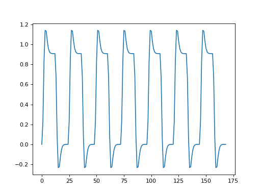
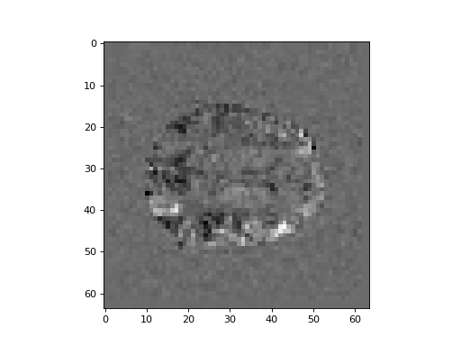

\(\newcommand{L}[1]{\| #1 \|}\newcommand{VL}[1]{\L{ \vec{#1} }}\newcommand{R}[1]{\operatorname{Re}\,(#1)}\newcommand{I}[1]{\operatorname{Im}\, (#1)}\)
Basic linear modeling¶
In this exercise we will run a simple regression on all voxels in a 4D
FMRI image ds114_sub009_t2r1.nii:
>>> #: Import some standard librares
>>> import numpy as np
>>> # Print to 4 DP
>>> np.set_printoptions(precision=4)
>>> import numpy.linalg as npl
>>> import matplotlib.pyplot as plt
>>> # Set default imshow parameters
>>> plt.rcParams['image.interpolation'] = 'nearest'
>>> plt.rcParams['image.cmap'] = 'gray'
>>> #: Load the image as an image object
>>> import nibabel as nib
>>> img = nib.load('ds114_sub009_t2r1.nii')
>>> #: Load the image data as an array
>>> # Drop the first 4 3D volumes from the array
>>> # (We already saw that these were abnormal)
>>> data = img.get_data()[..., 4:]
We make the design matrix from the convolved regressor from Convolving with the hemodyamic response function:
>>> #- Load the pre-written convolved time course
>>> #- Knock off the first four elements
>>> convolved = np.loadtxt('ds114_sub009_t2r1_conv.txt')[4:]
>>> plt.plot(convolved)
[...]
{kind=link}
{kind=link}

>>> #- Compile the design matrix
>>> #- First column is convolved regressor
>>> #- Second column all ones
>>> #- Hint: investigate "aspect" keyword to ``plt.imshow`` for a nice
>>> #- looking image.
>>> design = np.ones((len(convolved), 2))
>>> design[:, 0] = convolved
>>> plt.imshow(design, aspect=0.1)
<...>
{kind=link}
{kind=link}

>>> #- Reshape the 4D data to voxel by time 2D
>>> #- Transpose to give time by voxel 2D
>>> #- Calculate the pseudoinverse of the design
>>> #- Apply to time by voxel array to get betas
>>> data_2d = np.reshape(data, (-1, data.shape[-1]))
>>> betas = npl.pinv(design).dot(data_2d.T)
>>> betas.shape
(2, 122880)
>>> #- Transpose betas to give voxels by 2 array
>>> #- Reshape into 4D array, with same 3D shape as original data,
>>> #- last dimension length 2
>>> betas_4d = np.reshape(betas.T, img.shape[:-1] + (-1,))
>>> #- Show the middle slice from the first beta volume
>>> plt.imshow(betas_4d[:, :, 14, 0], interpolation='nearest', cmap='gray')
<...>
{kind=link}
{kind=link}

>>> #- Show the middle slice from the second beta volume
>>> plt.imshow(betas_4d[:, :, 14, 1], interpolation='nearest', cmap='gray')
<...>
{kind=link}
{kind=link}